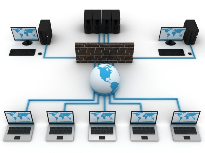
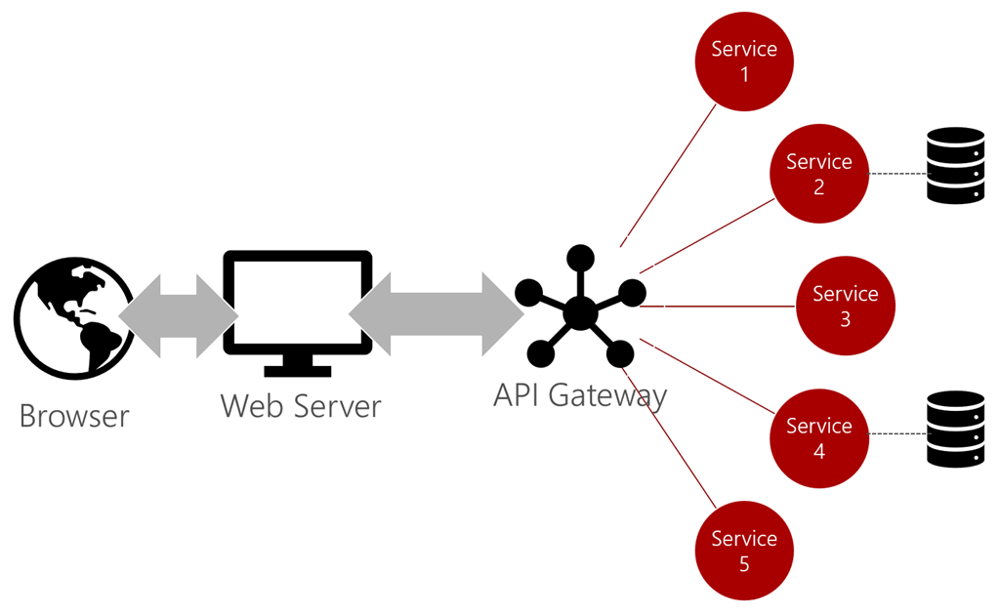
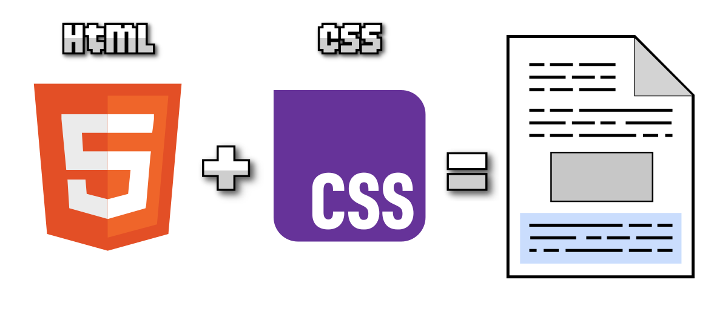
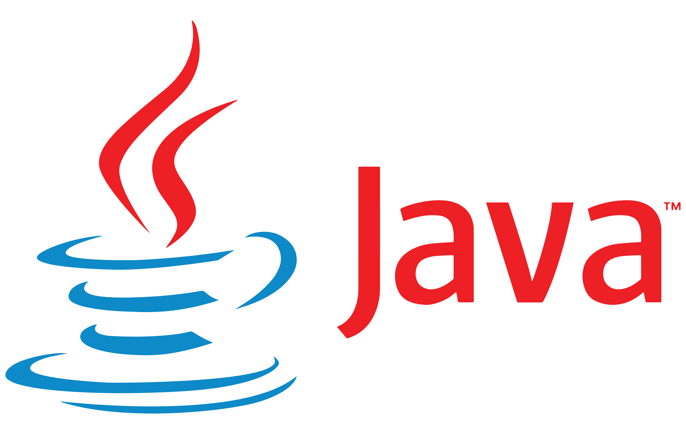
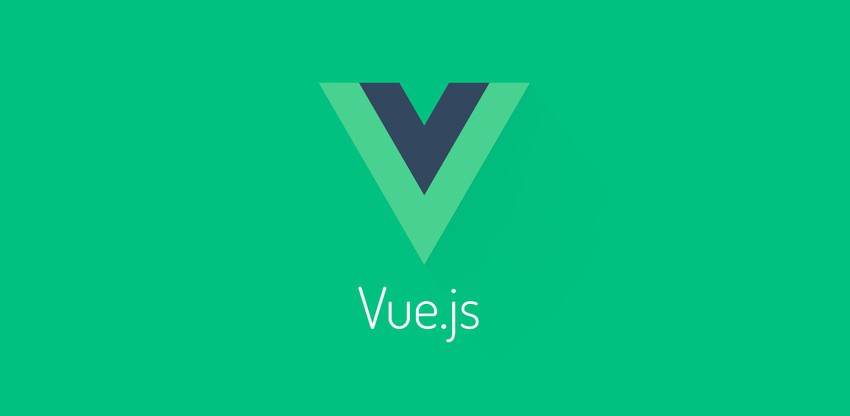
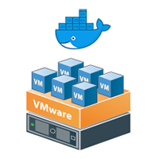
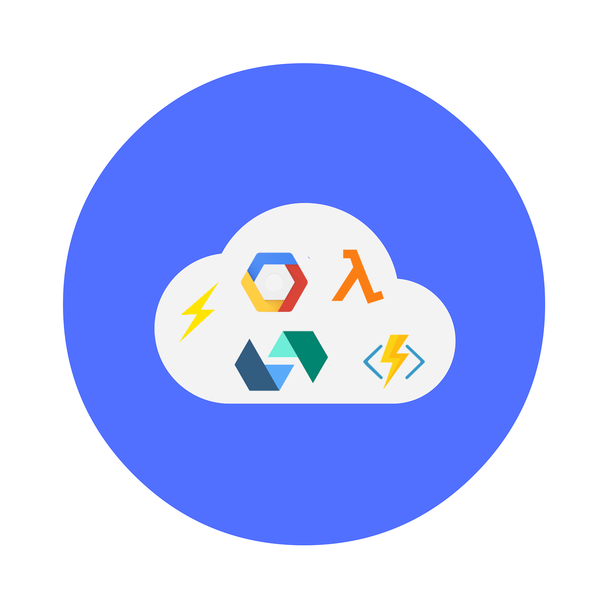
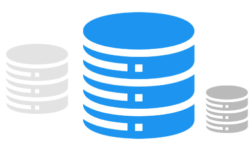

Evolución De Los Sistemas Computacionales
Proyecto de investigación donde se presentan distintos modelos, lenguajes y tecnologías que han marcado la evolución del software y los sistemas.
| Sistema | Concepto | Imagen |
|---|---|---|
Network File System |
NFS (Network File System) es un protocolo de red que permite a un sistema (cliente) acceder a archivos y directorios que están ubicados en otro sistema (servidor), como si fueran parte de su propio sistema de archivos local. |  |
Monolítico |
Un sistema monolítico es una arquitectura de software en la que todos los módulos y componentes de una aplicación se encuentran unidos en una sola unidad inseparable. Esto significa que la lógica de negocio, la gestión de datos y la interfaz de usuario están estrechamente acoplados, lo que facilita su desarrollo inicial pero complica la escalabilidad y el mantenimiento. Este tipo de sistemas fue muy común en las primeras etapas del desarrollo de software, ya que ofrecía simplicidad en su implementación, aunque cualquier modificación requería cambios en toda la aplicación, aumentando así el riesgo de errores globales. |  |
Cliente - Servidor |
El modelo cliente-servidor surgió como una evolución del monolito, permitiendo separar las funciones de los sistemas. En este enfoque, el cliente es el encargado de solicitar servicios, mientras que el servidor responde proporcionando los recursos necesarios, como datos o procesos. Esta arquitectura permitió la conexión de múltiples clientes hacia un mismo servidor, fomentando la creación de redes locales y el desarrollo de aplicaciones más dinámicas y distribuidas. Su importancia radica en que fue la base de gran parte de la infraestructura tecnológica de internet y de sistemas modernos de comunicación y almacenamiento de información. |  |
Microservicios |
La arquitectura de microservicios representa un avance significativo respecto al modelo cliente-servidor. En este paradigma, una aplicación se descompone en pequeños servicios independientes, cada uno encargado de una función específica y que se comunican entre sí mediante interfaces bien definidas como APIs. Gracias a esta independencia, los microservicios permiten un desarrollo más ágil, despliegues continuos y mayor capacidad de escalabilidad, ya que cada servicio puede evolucionar o actualizarse sin afectar a los demás. Este modelo ha sido adoptado por grandes empresas como Amazon, Netflix y Spotify debido a su flexibilidad y capacidad de responder rápidamente a las necesidades cambiantes de los usuarios. |  |
Network File System (NFS) |
El sistema de archivos en red, conocido como NFS, es un protocolo que permite a los usuarios acceder a archivos almacenados en un servidor remoto como si fueran parte de su propio equipo. Esta tecnología surgió para facilitar la colaboración y el trabajo en entornos distribuidos, especialmente en sistemas Unix y Linux. Al ofrecer la posibilidad de compartir recursos a través de la red, NFS contribuyó a la creación de sistemas más integrados, donde la distancia física entre clientes y servidores dejaba de ser una limitante para el acceso a la información. | |
HTML |
HTML, siglas de HyperText Markup Language, es el lenguaje estándar para la creación de páginas web. Su función principal es estructurar el contenido que se muestra en un navegador, utilizando etiquetas que definen títulos, párrafos, imágenes, enlaces y otros elementos. Aunque no es un lenguaje de programación en sí mismo, es la base fundamental del desarrollo web, ya que permite organizar la información y servir como punto de partida para integrar otros lenguajes como CSS y JavaScript, que enriquecen la experiencia visual e interactiva. |  |
CSS |
CSS, o Cascading Style Sheets, es un lenguaje de diseño que se utiliza para dar estilo y presentación a las páginas web creadas con HTML. Con CSS es posible definir colores, tipografías, márgenes, alineaciones, animaciones y adaptaciones a distintos dispositivos, lo que permite separar la estructura del contenido de su apariencia visual. Gracias a CSS, las páginas web pueden ser responsivas y ofrecer experiencias atractivas y consistentes en computadoras, tabletas y teléfonos móviles, convirtiéndose en un componente indispensable del desarrollo web moderno. |  |
JavaScript |
JavaScript es un lenguaje de programación interpretado que se utiliza principalmente para dotar de interactividad a las páginas web. A diferencia de HTML y CSS, que se enfocan en la estructura y el diseño, JavaScript permite realizar cálculos, validar formularios, actualizar contenido dinámicamente y comunicarse con servidores sin necesidad de recargar la página. Su evolución lo ha convertido en uno de los lenguajes más importantes del mundo, siendo utilizado tanto en el frontend como en el backend mediante entornos como Node.js. Gracias a JavaScript, la web pasó de ser un espacio estático a una plataforma dinámica e interactiva. | |
React |
React es una biblioteca de JavaScript desarrollada por Facebook que se utiliza para construir interfaces de usuario de manera eficiente y modular. Su principal característica es el uso de componentes reutilizables, lo que permite dividir una aplicación en partes pequeñas e independientes que pueden combinarse para formar interfaces complejas. Además, React incorpora un sistema llamado Virtual DOM, que mejora el rendimiento al actualizar únicamente los elementos necesarios en pantalla. Hoy en día, es una de las tecnologías más utilizadas en el desarrollo frontend, formando parte del ecosistema moderno de frameworks y librerías que permiten la creación de aplicaciones web rápidas, escalables y fáciles de mantener. |  |
Phyton |
Python es un lenguaje de programación de alto nivel caracterizado por su simplicidad, legibilidad y versatilidad. Se utiliza en campos como el desarrollo web, la inteligencia artificial, la ciencia de datos y la automatización de procesos. Su sintaxis clara y la gran cantidad de librerías disponibles lo convierten en una de las herramientas más populares del mundo, permitiendo a principiantes y expertos crear aplicaciones robustas de manera eficiente. |  |
Java |
Java es un lenguaje de programación orientado a objetos que se consolidó como uno de los pilares del software empresarial. Su lema “escribir una vez y ejecutar en cualquier lugar” le permitió ser multiplataforma gracias a la máquina virtual Java. Es ampliamente usado en aplicaciones empresariales, sistemas bancarios, desarrollo móvil en Android y soluciones de gran escala, destacando por su robustez, seguridad y comunidad activa. |  |
C# |
C# es un lenguaje creado por Microsoft que combina potencia y facilidad de uso, diseñado para trabajar con la plataforma .NET. Su orientación a objetos y sus características modernas lo hacen ideal para aplicaciones de escritorio, móviles y videojuegos a través de Unity. Se ha convertido en una pieza clave en el ecosistema de Microsoft y en el desarrollo de software empresarial y de entretenimiento. |  |
PHP |
PHP es un lenguaje de programación creado para el desarrollo web dinámico que marcó un antes y un después en la expansión de internet. Su capacidad para integrarse con bases de datos y mezclarse con HTML permitió la creación de millones de sitios web y plataformas como WordPress. Aunque fue criticado en sus primeras versiones, hoy en día sigue vigente gracias a mejoras en seguridad y rendimiento. |  |
Node.js |
Node.js es un entorno que permite ejecutar JavaScript en el lado del servidor. Su modelo basado en eventos y no bloqueante lo convierte en una opción eficiente para aplicaciones en tiempo real como chats, juegos en línea y transmisiones de datos. Con Node.js, JavaScript puede usarse tanto en el frontend como en el backend, lo que unifica el desarrollo y facilita la creación de proyectos modernos y escalables. |  |
Angular |
Angular es un framework desarrollado por Google para construir aplicaciones web dinámicas y de una sola página. Se basa en TypeScript y utiliza componentes estructurados que facilitan el desarrollo de proyectos grandes. Su arquitectura robusta y el soporte de una comunidad global lo han convertido en una de las herramientas preferidas en el entorno empresarial. |  |
Vue.js |
Vue.js es un framework progresivo de JavaScript que destaca por su simplicidad y flexibilidad. Su curva de aprendizaje es baja y permite construir interfaces interactivas de manera rápida, integrándose fácilmente con proyectos existentes. Su modelo basado en componentes lo hace ideal para aplicaciones escalables sin perder facilidad de uso. |  |
Sistemas Distribuidos |
Los sistemas distribuidos están formados por múltiples computadoras que trabajan de manera coordinada para cumplir un objetivo común, presentándose al usuario como si fueran un único sistema. Su principal ventaja es que permiten repartir la carga de trabajo, mejorar la tolerancia a fallos y aumentar la escalabilidad. Se utilizan en motores de búsqueda, redes sociales y aplicaciones que requieren gran disponibilidad. | |
Computacion en la nube |
La computación en la nube revolucionó la forma de acceder a los recursos informáticos, permitiendo a empresas y usuarios obtener servidores, almacenamiento y software a través de internet bajo demanda. Este modelo eliminó la necesidad de grandes inversiones en infraestructura, facilitando el crecimiento de negocios globales y la creación de servicios accesibles desde cualquier lugar del mundo. | |
Contenedores y Virtualizacion |
La virtualización permitió ejecutar varios sistemas operativos en un mismo hardware mediante máquinas virtuales, mientras que los contenedores introdujeron una forma más ligera de aislar aplicaciones junto con sus dependencias. Tecnologías como Docker y Kubernetes han impulsado esta tendencia, posibilitando el despliegue rápido y eficiente de aplicaciones modernas en cualquier entorno. |  |
Serverless |
El modelo Serverless permite a los desarrolladores ejecutar código sin tener que administrar servidores. El proveedor en la nube gestiona automáticamente la infraestructura y escala los recursos según la demanda, cobrando solo por el tiempo de ejecución del código. Esto simplifica el desarrollo y reduce costos, haciendo posible centrarse exclusivamente en la lógica del negocio. |  |
Bases de Datos |
Las bases de datos han evolucionado desde modelos relacionales como SQL, que organizan datos en tablas con integridad y consistencia, hasta bases de datos NoSQL, que permiten manejar grandes volúmenes de datos no estructurados como documentos o grafos. Hoy en día ambos modelos coexisten, adaptándose a distintas necesidades en aplicaciones modernas que requieren velocidad, flexibilidad y escalabilidad. |  |
Evolucion General |
La evolución de los sistemas computacionales ha sido un proceso gradual en el que se han ido superando limitaciones y adoptando nuevos modelos arquitectónicos. Desde los sistemas monolíticos, que concentraban todo en una sola unidad, se dio paso al modelo cliente-servidor, que permitió separar funciones y mejorar la interacción en red. Más adelante, los microservicios trajeron consigo la independencia de componentes, facilitando la escalabilidad y el desarrollo ágil. Tecnologías como NFS hicieron posible la colaboración a distancia y el trabajo compartido en redes. En la actualidad, estos avances han sentado las bases de paradigmas modernos como la computación en la nube, los contenedores y el modelo serverless, que continúan transformando la manera en que se diseñan y consumen los sistemas informáticos. |  |